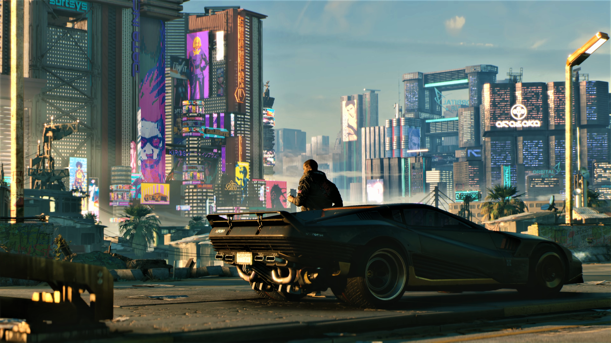

Top 10 Video Games of 2020
Final Fantasy VII Remake
It's easy to feel stupid looking at the promotional materials for Final Fantasy VII Remake, the first part in what looks like a whole series of games recreating the original Japanese role-playing game in lavish real-time 3D. Like, we all know this game. Many of us love it, have played it dozens of times, know the characters and the settings intimately. So why does it look so damned exciting and fresh? The lavish nostalgia trip looks like a blast every time it's shown its face, with fast action and pyrotechnics making what might have seemed like stiff turn-based encounters in the '90s feel like, well, big battles between a hardy band of eco-terrorists and a giant evil corporation. Which, by the by, is not feeling any less prescient in 2020 than it did in 1997. The first installment of the remade Final Fantasy VII hits PlayStation 4 on March 3, 2020.
Doom Eternal

Rip and tear, until the job is done. That was the promise of Doom (2016), the compelling reboot of the pioneering first-person shooter franchise. Well, the job isn't done quite yet, as Doom Eternal sees the return of the Doom Marine, legions of demonic forces, and enough armaments to burn the legions of hell to the ground. This time, the action reaches all the way to Earth, as mankind itself seems to be under siege from the otherworldly threat. And, of course, you're the only one who can help. The joy of Doom's rebooted franchise is in the speed and intensity of play, and Doom Eternal seems poised to double down on all the best parts of its predecessor with bigger, more complex levels, more monsters, more weapons, and even asymmetrical multiplayer. It's out March 20 on PC as well as PlayStation 4 and Xbox One, with a Switch port slated for sometime this year.
Animal Crossing: New Horizons
Sometimes you just need a day off on a tropical island. Sleep late, tend to the garden, visit the beach, pay taxes to Tom Nook … OK, some parts of Animal Crossing: New Horizons are undoubtedly going to be more idyllic than others. But even with the friction created by Tom Nook's creeping capitalist empire, the newest entry in Nintendo's pastoral series of animal-based life simulators promises a heaping dollop of escapist joy. Build a home and a village and share it with friends; what could be more wonderful than that? After fans clamoring for a new entry in the series since roughly the day the Nintendo Switch was announced, New Horizons finally hits the platform on March 20.
Half-Life Alyx

If we had told you just a few months ago that Valve was releasing a new Half-Life game in 2020, you would have said we were liars. Reasonable, frankly: It's been 13 years since the last major Half-Life release. But here we are! A flagship virtual-reality title, Half-Life: Alyx is a prequel set in between the first and second games in the series, starring hero and future-Gordon-Freeman-companion Alyx Vance. It looks like a fascinating attempt to blend classic Half-Life gameplay with current VR mechanics, and the visual design is impressive. Valve's best designers, including people formerly of Firewatch's Campo Santo, have worked on this title, and we'll see if that effort can create a successful Half-Life successor when Alyx releases for PC in March.
Cyberpunk 2077
While not without controversy, CD Projekt Red's Cyberpunk 2077 is one of the more interesting releases of the upcoming year. Based on a long-running and well-loved tabletop role-playing game series, this is the studio's big followup to Witcher 3, a massive, open-ended role-playing game designed to immerse you in a complex world and carry you through it. Where Witcher had spells and swords, this time you've got guns, hacking, cybernetic implants, and Keanu Reeves, who plays a major mentor role announced at this past E3 to major acclaim. While it's unlikely to capture the lightning in a bottle that was Witcher 3's near-perfect role-playing excellence, Cyberpunk 2077 will still undoubtedly be worth paying attention to when it launches for PlayStation 4, Xbox One, PC, and Google Stadia on April 16.
The Last of Us, Part 2
The sequel to Naughty Dog's prestige action game is finally upon us. Whereas The Last of Us was a dark, brutal meditation on violence and power in a post-apocalyptic landscape, The Last of Us, Part 2 looks to be … a dark, brutal meditation on violence and power in a postapocalyptic landscape. Only this time, you play as an older Ellie, the younger companion from the first game, sent on a roaring rampage of revenge after the death of her lover. Will Ellie's homosexuality be used in the plot for anything more than an excuse for violence? Will this game have something intelligent or interesting to say about its violence, or will it just be a festival of nastiness? It's not at all clear, but with Naughty Dog at the helm, it's bound to be compelling even if it comes up empty. Ellie's dark revenge fantasy begins when The Last of Us, Part 2 comes to PlayStation 4 on May 29.
Microsoft Flight Simulator
Well, this is bound to bring some of you back. The classic series of painstakingly crafted simulators from Microsoft is returning, with a new, gorgeous-looking Microsoft Flight Simulator cresting over the horizon. Using modern mapping tech and internet-connected predictive technology, this game promises an up-to-date version of the entire world to fly over and explore, with realistic flight controls and just about any airport you can think of to land on or take off from. The fidelity we're talking is intense, too, incorporating real-life weather patterns and maybe even traffic. Did you have a wonderful time pretending to be a pilot, cruising over the majesty of nature? Then Microsoft Flight Simulator might prove indelibly addictive when it comes out for PC and Xbox later this year.
12 Minutes
Annapurna Interactive publishes fascinating things. One of its more compelling recent announcements is 12 Minutes, a game developed by creator Luis Antonio with a looping, twisty premise: Men are coming to kill you. You have 12 minutes. And you'll loop those 12 minutes, Groundhog Day-style, over and over in an attempt to understand the drama and find a way to survive. With a top-down perspective and a tonal valence that's much more surrealist drama than gaming romp, 12 Minutes stands out as a dark and intriguing bit of play. Just watch that trailer: It's tense, gorgeous, and uneasy as hell. It'll be fascinating to see where this looping journey leads when 12 Minutes launches in the coming months.
Halo Infinite
The contemporary history of the Halo franchise is rough. After Bungie departed to follow the path to their Destiny, 343 Industries took over as the development team on the space military franchise, and no one has really been fully pleased with the results. While the Master Chief Collection has evolved into one of the best curatorial projects in commercial games, the path there was rocky—the multiplayer feature did not work on initial release. Halo 5, meanwhile, was a troubled game that didn't seem to fully satisfy creators or players. Halo: Infinite, technically Halo 6, is a chance to right the ship, reinstating dynamics players loved about the initial games and proving that, yes, 343 knows what it's doing. We haven't seen much of the game so far, but that will change pretty soon, as Halo: Infinite is slated as a launch title for the Xbox Series X, coming sometime at the end of 2020.
Sable
Delayed to 2020, Sable continues to be one of the most gorgeous things to grace our gaming screens in quite some time. Billed as a coming-of-age tale in a vast, mystical world, it's an exploration game with a Moebius-influenced art style that is just, well, we get mystified every time we look at it. Those vast, sandy deserts contain an astonishing amount of detail and a compelling sense of mystery that the creators at Shedworks have spent years trying to get right. This small team proves that time and craftsmanship can create something that at least looks absolutely breathtaking, and we have a lot of hope it'll feel just as compelling to explore when it comes out for PC sometime this year.